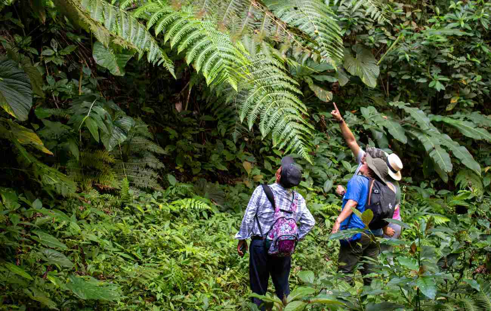
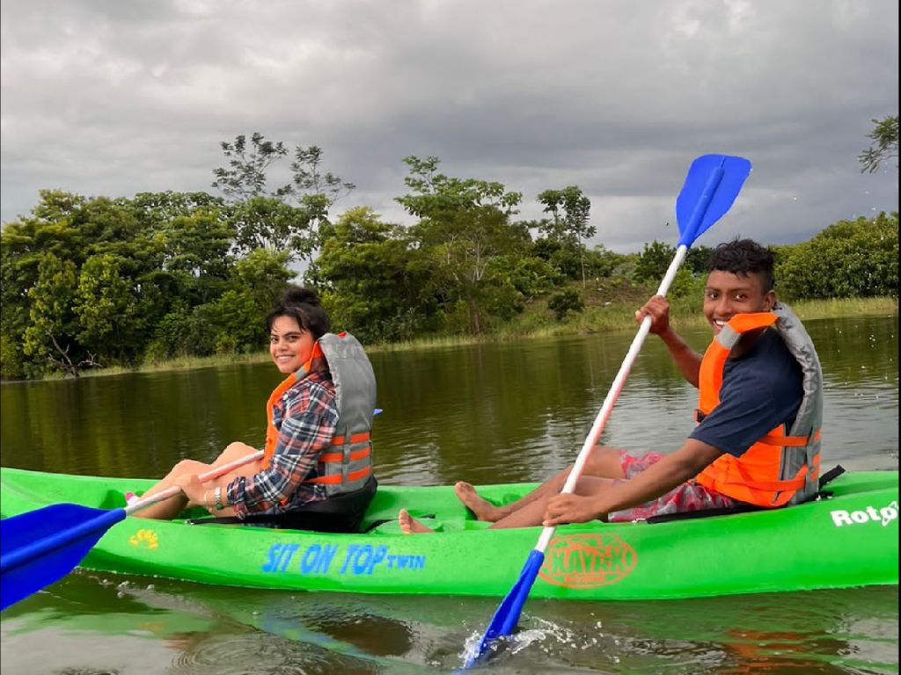
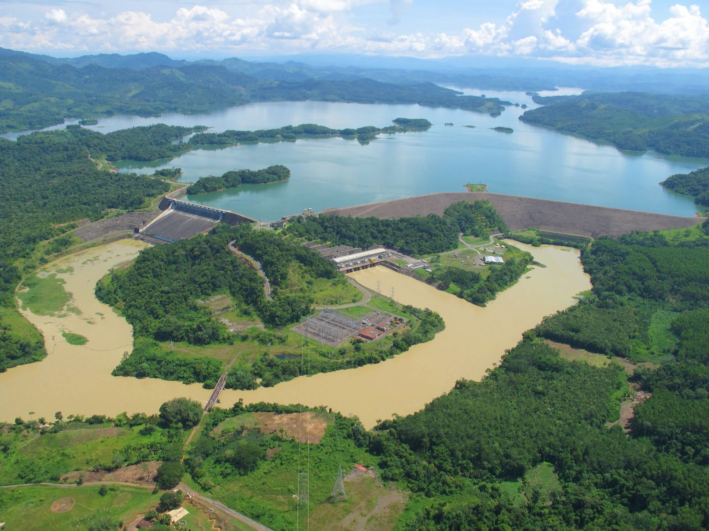

Rutas
Las rutas turísticas de Tierralta han sido diseñadas para ofrecer experiencias variadas que se adaptan a todos los gustos, ya que hay desde recorridos ecológicos llenos de tranquilidad, hasta espacios recreativos ideales para compartir en familia o con amigos, cada ruta te permitirá descubrir la esencia del municipio desde diferentes perspectivas.
A través de estas rutas podrás conectar con la naturaleza, aprender sobre biodiversidad de la región, conocer proyectos sostenibles y disfrutar de actividades recreativas que combinan diversión, cultura y educación ambiental.

Rutas naturales
Te esperan cascadas, piscinas cristalinas y paisajes exuberantes. Desconecta de la ciudad y reconecta con la naturaleza de la región del Alto Sinú.
Explora →
Rutas recreativas
Diversión para todos: kayak, natación en el río, acampada y deportes en los espacios exteriores más vibrantes de Tierralta.
Explora →